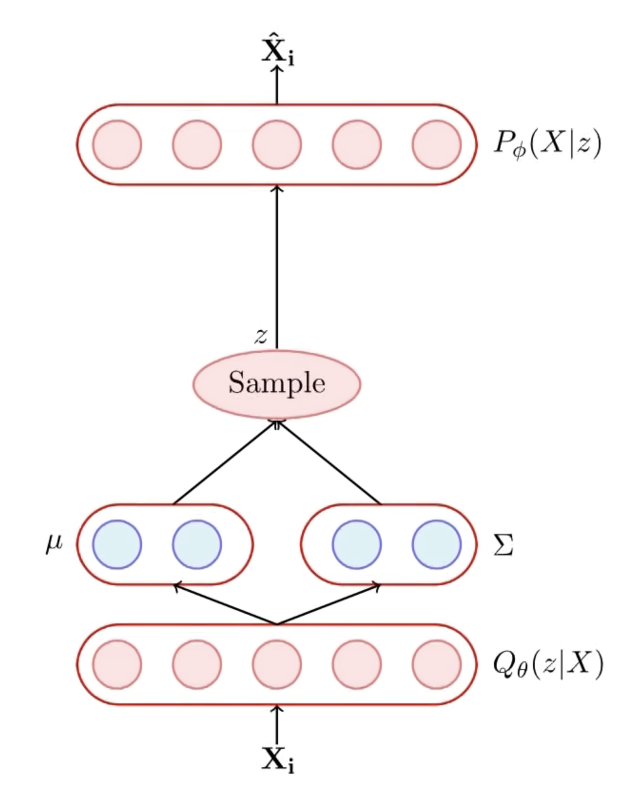
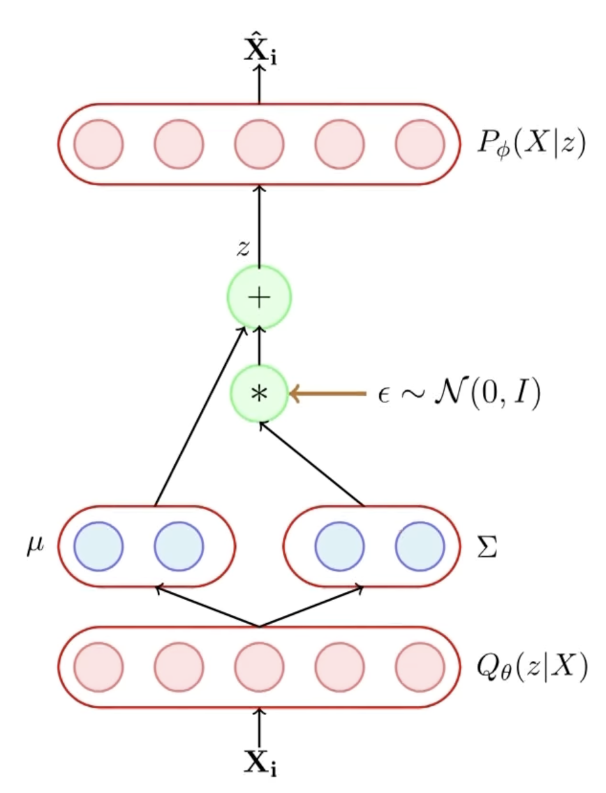

\[ \text{Kullback-Leibler Divergence} \]
KL Divergence of Two Distributions of Continuous Random Variable
\[ D_{KL}(p \parallel q) = \underset{x \sim p(x)}{\int} p(x) \log \frac{p(x)}{q(x)} \]
KL Divergence of Two Gaussians
For a \(k\)-dimensional Gaussian, the PDF \(p(\mathbf{x})\) is given as:
\[ p(\mathbf{x}) = \frac{1}{(2 \pi)^{k/2} | \Sigma |^{1/2}} \exp \left(-\frac{1}{2} (\mathbf{x} - \boldsymbol{\mu})^T \Sigma^{-1} (\mathbf{x} - \boldsymbol{\mu}) \right) \]
Let \(p\) and \(q\) be two Normal Distributions denoted as \(\mathcal{N}(\boldsymbol{\mu}_p, \Sigma_p)\) and \(\mathcal{N}(\boldsymbol{\mu}_q, \Sigma_q)\) respectively.
Then the KL Divergence between these two:
\[ D_{KL}(p \parallel q) = \mathbb{E}_p[ \log(p) - \log(q)] \]
\[ = \mathbb{E}_p \left[ \frac{1}{2} \log \frac{| \Sigma_q |}{| \Sigma_p |} - \frac{1}{2}(\mathbf{x} - \boldsymbol{\mu_p})^T \Sigma_p^{-1} (\mathbf{x} - \boldsymbol{\mu_p}) + \frac{1}{2}(\mathbf{x} - \boldsymbol{\mu_q})^T \Sigma_q^{-1} (\mathbf{x} - \boldsymbol{\mu_q}) \right] \]
\[ = \frac{1}{2} \log \frac{| \Sigma_q |}{| \Sigma_p |} - \mathbb{E}_p \left[\frac{1}{2}(\mathbf{x} - \boldsymbol{\mu_p})^T \Sigma_p^{-1} (\mathbf{x} - \boldsymbol{\mu_p}) \right] + \mathbb{E}_p \left[\frac{1}{2}(\mathbf{x} - \boldsymbol{\mu_q})^T \Sigma_q^{-1} (\mathbf{x} - \boldsymbol{\mu_q}) \right] \]
Since \((\mathbf{x} - \boldsymbol{\mu_p})^T \Sigma_p^{-1} (\mathbf{x} - \boldsymbol{\mu_p}) \in \mathbb{R}\) so, we write it as \(tr \left\{(\mathbf{x} - \boldsymbol{\mu_p})^T \Sigma_p^{-1} (\mathbf{x} - \boldsymbol{\mu_p}) \right\}\) and since \(tr(\mathbf{ABC}) = tr(\mathbf{CBA})\) hence we can also write it as \(tr \left\{(\mathbf{x} - \boldsymbol{\mu_p}) (\mathbf{x} - \boldsymbol{\mu_p})^T \Sigma_p^{-1} \right\}\). So the second term now is:
\[ = \frac{1}{2} tr \left\{ \mathbb{E}_p \left[(\mathbf{x} - \boldsymbol{\mu_p}) (\mathbf{x} - \boldsymbol{\mu_p})^T \Sigma_p^{-1} \right] \right\} \]
And since \(\mathbb{E}_p \left[(\mathbf{x} - \boldsymbol{\mu_p}) (\mathbf{x} - \boldsymbol{\mu_p})^T\right] = \Sigma_p\). Simplifying we get
\[ = \frac{1}{2} tr \left\{ \Sigma_p \Sigma_p^{-1} \right\} \] \[ = \frac{1}{2} tr \left\{ I_k \right\} \] \[ = \frac{k}{2} \]
And simplifying the last term:
\[ \mathbb{E}_p \left[(\mathbf{x} - \boldsymbol{\mu_q})^T \Sigma_q^{-1} (\mathbf{x} - \boldsymbol{\mu_q}) \right] = (\boldsymbol{\mu_p} - \boldsymbol{\mu_q})^T \Sigma_q^{-1} (\boldsymbol{\mu_p} - \boldsymbol{\mu_q}) + tr \left\{ \Sigma_q^{-1} \Sigma_p \right\} \]
So, finally
\[ D_{KL}(p \parallel q) = \frac{1}{2} \left[ \log \frac{| \Sigma_q |}{| \Sigma_p |} - k + (\boldsymbol{\mu_p} - \boldsymbol{\mu_q})^T \Sigma_q^{-1} (\boldsymbol{\mu_p} - \boldsymbol{\mu_q}) + tr \left\{ \Sigma_q^{-1} \Sigma_p \right\} \right] \]
In the scenario when \(q\) is \(\mathcal{N}(0, I)\), we get
\[ D_{KL}(p \parallel q) = \frac{1}{2} \left[ \boldsymbol{\mu_p}^T \boldsymbol{\mu_p} + tr \left\{ \Sigma_p \right\} - k - \log |\Sigma_p| \right] \]
\[ \text{Generative Adversarial Network} \]
\[ \min_{\phi} \max_{\theta} V(G, D) = \underset{\textbf{x} \sim p_{\text{data}}}{\mathbb{E}} [\log(D_{\theta}(\textbf{x}))] + \underset{\textbf{z} \sim p_z(\textbf{z})}{\mathbb{E}} [1 - \log(D_{\theta}(G_{\phi}(\textbf{z})))] \]
\[ \text{Variational AutoEncoders} \]
We wish to achieve two goals: 1. Learning Abstraction \(\to\) A hidden representation given the input \(P(z | X)\) - this is achived by the Encoder \(Q_{\theta}(z | X)\). 2. Generation \(\to\) given some hidden representation using the Decoder \(P_{\phi}(X | z)\).
For all these our aim is to understand the joint distribution \(P(X, z) = P(z) \cdot P(X | z)\). At inference we want given some \(X\) (observed variable), finding out the most likely assignments of latent variables \(z\) which would result in this observation.
\[ P(z | X) = \frac{P(X | z) \cdot P(z)}{P(X)} \] But since \(P(X) = \int P(X | z) \cdot P(z) dz = \int \int \dots \int P(X | z_1, z_2, \dots z_n) \cdot P(z_1, z_2, \dots z_n) dz_1 \cdot dz_2 \dots dz_n\) is intractable.

Hence instead, we assume the posterior distribution \(P(z | X)\) as \(Q_{\theta}(z | X)\). Further assume that \(Q_{\theta}(z | X)\) is a Gaussian whose parameters are determined by our neural network \(\to\) Encoder.
\[ \boldsymbol{\mu}, \Sigma = g_{\theta}(X) \]
And since we want this distribution to be close to \(P(z | X)\), hence we wish to minimise their KL Divergence.
\[ \min_{\theta} D_{KL} \left(Q_{\theta}(z | X) \parallel P(z | X) \right) \]
Since \[ D_{KL} \left(Q_{\theta}(z | X) \parallel P(z | X) \right) = \int Q_{\theta}(z | X) \log \frac{Q_{\theta}(z | X)}{P(z | X)} \cdot dz \] \[ = \underset{z \sim Q_{\theta}(z | X)}{\mathbb{E}} \left[ \log(Q_{\theta}(z | X)) - \log(P(z | X)) \right] \] \[ = \mathbb{E}_Q \left[ \log(Q_{\theta}(z | X)) - \log \left( \frac{P(X | z) \cdot P(z)}{P(X)} \right) \right] \] \[ = \mathbb{E}_Q \left[ \log(Q_{\theta}(z | X)) - \log(P(z)) \right] - \mathbb{E}_Q \left[ \log (P(X | z)) \right] + \log(P(X)) \]
Also since \(\mathbb{E}_Q \left[ \log(Q_{\theta}(z | X)) - \log(P(z)) \right] = D_{KL} \left(Q_{\theta}(z | X) \parallel P(z) \right)\) so, the finally rearranging we may write
\[ \log(P(X)) = \color{red}{D_{KL} \left(Q_{\theta}(z | X) \parallel P(z | X) \right)} + \color{blue}{\mathbb{E}_Q \left[ \log (P(X | z)) \right] - D_{KL} \left(Q_{\theta}(z | X) \parallel P(z) \right)} \]
since \(\color{red}{D_{KL} \left(Q_{\theta}(z | X) \parallel P(z | X) \right) \ge 0}\) and \(\color{blue}{\mathbb{E}_Q \left[ \log (P(X | z)) \right] - D_{KL} \left(Q_{\theta}(z | X) \parallel P(z) \right)}\) \(\le \log(P(X))\). And since the final task is maximising the log-likelihood of \(P(X)\), hence it is equivalent to maximizing the \(\color{blue}{\text{Blue Term}}\). So, the final objective is
\[ \color{green}{\mathcal{L}(\theta, \phi) = \max_{\theta, \phi} \left\{ \mathbb{E}_Q \left[ \log (P_{\phi}(X | z)) \right] - D_{KL} \left(Q_{\theta}(z | X) \parallel P(z) \right) \right \}} \]
Now clearly all the terms are within our reach. To get the KL divergence, we make a forward pass through the Encoder to get \(Q_{\theta}(z | X)\) and we know \(P(z)\) \[ Q_{\theta}(z | X) \sim \mathcal{N}(\boldsymbol{\mu_z}(X), \Sigma_z(X)) \] \[ P(z) \sim \mathcal{N}(\mathbf{0}, I) \]
So, one half of the loss function is easily computable as:
\[ D_{KL} \left(Q_{\theta}(z | X) \parallel P(z) \right) = \frac{1}{2} \left[ \boldsymbol{\mu_z}^T(X) \boldsymbol{\mu_z}(X) + tr \left\{ \Sigma_z (X) \right\} - k - \log |\Sigma_z(X)| \right] \]
Now the second part for the decoder, we’ll approximate the expectation with a single \(z\) drawn sampled from \(Q_{\theta}(z | X)\). Assume again that \(P(X | z)\) as Gaussian with mean \(\mu(z)\) and unit variance.
\[ \boldsymbol{\mu} = f_{\phi}(z) \]
Hence the log-likelihood of the \(P(X = x_i | z)\) can be written as:
\[ \log(P(X = x_i | z)) = C - \frac{1}{2} || X_i - f_{\phi}(z)||^2 \]
Hence the overall loss function is
\[ \min_{\theta, \phi} \left\{ || X_i - f_{\phi}(z)||^2 + \frac{1}{2} \left[ \boldsymbol{\mu_z}^T(X) \boldsymbol{\mu_z}(X) + tr \left\{ \Sigma_z (X) \right\} - k - \log |\Sigma_z(X)| \right] \right\} \]
Now, in order for back propogation algorithm to work, we introduce the continuity in the sampling of \(z\) by moving the sampling process to an input layer this is done first by sampling from a Standard Gaussian \(\epsilon \sim \mathcal{N}(0, I)\) and then obtaing \(z\) with the required \(\boldsymbol{\mu_z}(X), \Sigma_z(X)\)
\[ z = \boldsymbol{\mu_z}(X) + \Sigma_z(X) \times \epsilon \]
Hence, the randomness has been shifted to \(\epsilon\) and not the \(X\) or the parameters of the model.

Generation Part
After the model parameters are learned we remove the encoder and feed a \(z \sim \mathcal{N}(0, I)\) to the decoder. The decoder will then predict \(f_{\phi}(z)\) and we can draw an \(X \sim \mathcal{N}(f_{\phi}(z), I)\).